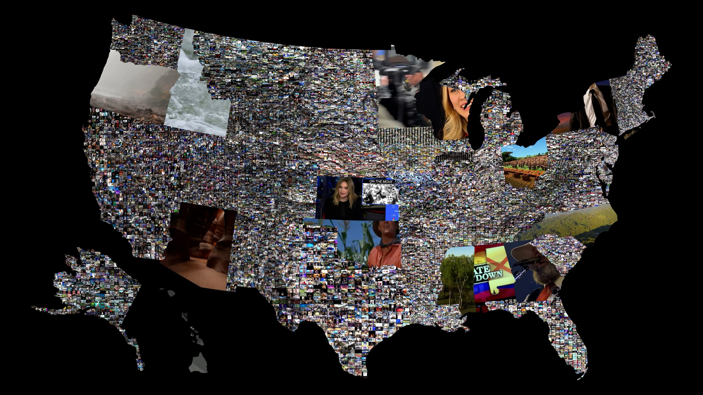

Video Artist, Toolmaker, Curator.
What we are, seenthrough our signals.
I build emergent systems and software for exploring relations, and turn them into performative instruments for navigating unexpected images and ways of making meaning.
THE ARCHIVE
The complete body of work, newest to oldest. Filter by the throughlines that move across media and time.
ABOUT
BIOGRAPHYEric Souther
Video artist and toolmaker. b. 1987, Kansas City.
Associate Professor of Kinetic Imaging, Gwen Frostic School of Art, Western Michigan University.
I hold an MFA in Electronic Integrated Arts from the New York State College of Ceramics at Alfred University, and a BFA in New Media from the Kansas City Art Institute.
My creative research draws from new materialism, anthropology, ritual, deep time, and toolmaking. I read these areas through one another and bring them together in technological assemblages: emergent systems and software for exploring relations. I turn these systems into performative instruments for navigating unexpected images and ways of making meaning. The work takes many forms, including interactive installation, audiovisual performance, single-channel video, and software.
My work has been exhibited and screened nationally and internationally across the United States, Europe, Asia, and South America.
CURRICULUM VITAENEWS
UPCOMING
RECENT
GRANTS AND AWARDS
TOOLMAKING
PHILOSOPHICAL TOOLSBuilding tools within experimental media art opens ways of seeing the electronic image beyond industry-defined possibilities. It also creates space to question every tool and its relationship to what can be imagined.
Community, shared knowledge, modularity, and performativity are central to how new images—and new ways of thinking—emerge.
History of Video Instruments: Artists and Toolmakers 1965–Present — a lecture presented during the Critical Flow Workshop Series curated by Marcos Serafim, School of Art, University of Arizona.
 PHILOSOPHICAL TOOLS ON PATREON ↗
PHILOSOPHICAL TOOLS ON PATREON ↗
TOUCHDESIGNER TUTORIALS AND TOOLS FOR EXPERIMENTAL MEDIA ARTS
In the late 1960s and early 1970s, a generation of artists and engineers began building their own video instruments; analog circuits modeled on the modular logic of audio synthesizers like the Moog, but for video. Unlike the closed, industrial tools of broadcast television, these devices were open systems that invited experimentation, happy accidents, and entirely new ways of seeing the electronic image. Out of this excitement around a new frontier, organizations emerged that focused on building community, developing artist-built tools, and providing access to facilities and equipment that would otherwise be out of reach. The Experimental Television Center in Owego, New York, the National Center for Experiments in Television in San Francisco, and the Electronic Visualization Laboratory in Chicago all became vital hubs for this work, helping not only to launch the careers of pioneers like Nam June Paik, Woody and Steina Vasulka, and Gary Hill, but also creating rich environments where artists and engineers collaborated to build new instruments and processes that worked modularly, giving artists the flexibility to find hybrid forms and push the boundaries of the moving image.
The instruments at the center of this research cannot truly be replicated. Their phenomena emerged from discrete analog circuits that produced phenomena unique to CRT televisions, NTSC signals, and vector-based displays, systems that are irreducibly physical and historical. Rather than imitation, this project looks closely at historical signal flows and uses contemporary software to develop new visual vocabularies that honor that lineage while pushing into new territories.
TOX SUITE
THREE VOLUMESMODULAR TOX OVERVIEWS
The instruments. Each TOX is a modular component built for TouchDesigner and made to be played, in the lineage of artist-built video tools.
BROWSE THE COMPLETE INSTRUMENT INDEX
COMPLETE MODULAR TOX COLLECTIONLIVE ON PATREON ↗TD FOR VIDEO ARTISTS
A tutorial series for artists coming to TouchDesigner from video. Listed in the order they were published. Only Parts 17 and 18 carry a number on Vimeo, so the rest are shown by title. Downloads and project files are on Patreon.
BROWSE THE COMPLETE TUTORIAL INDEX
COMPLETE TD FOR VIDEO ARTISTS COLLECTIONLIVE ON PATREON ↗SIGNAL CULTURE MODULAR APPS
EXPERIMENTAL REAL-TIME VIDEO PROCESSINGThe Signal Culture Apps give access to custom professional video and new media software applications for producing real-time experimental media artworks. I joined the board of Signal Culture in 2016, to help develop these experimental video applications for real-time video processing. From 2016 to the present, Jason Bernagozzi and I have developed nine experimental media art applications. We work collaboratively on the code behind the main process and functionality of the application, and I develop the user interface and design.
The Signal Culture applications have over ten thousand users worldwide and are in more than twenty university media art studios around the United States. Our applications provide a way of sharing the importance of artist-built tools and the principles and pedagogies that emerged from the Experimental Television Center and that continue with Signal Culture's studios. These include modularity, performativity, and philosophical processes.
SIGNAL CULTURE MODULAR APPS ↗
CURRICULUM VITAE
The full record, 2008 to now. Filter by area, or search across every entry at once.